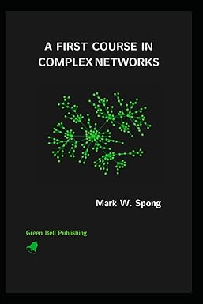
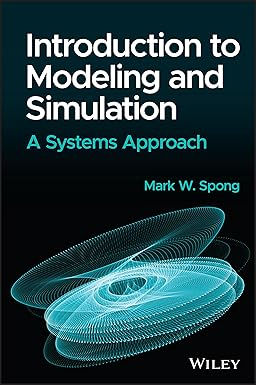
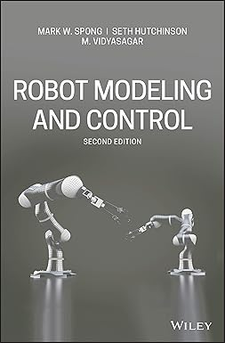
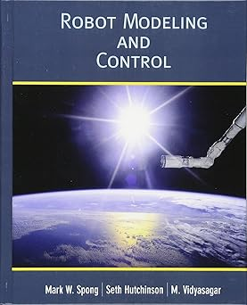
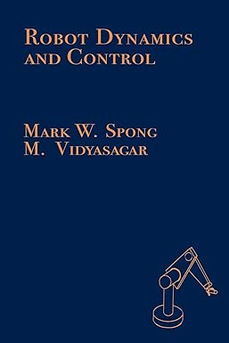
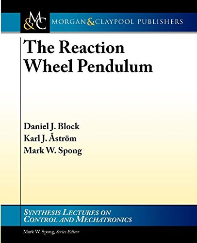
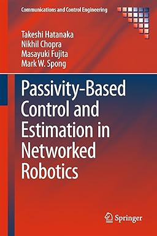
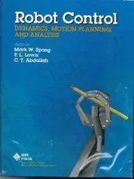

Biography
Mark Spong is a professor of Systems Engineering and Electrical and Computer Engineering in the Erik Jonsson School of Engineering and Computer Science at The University of Texas at Dallas. He previously served as Dean of the Jonsson School and held the Lars Magnus Ericsson Chair in Electrical Engineering.
Before joining UT Dallas, he was on the faculty of the University of Illinois at Urbana–Champaign, where he was the Donald Biggar Willett Professor of Engineering and director of the Center for Autonomous Engineering Systems and Robotics. He has also held faculty appointments at Lehigh University and Cornell University and visiting positions at several universities around the world.
Professor Spong’s research has made fundamental contributions to robotics, nonlinear control, teleoperation, and networked multi-agent systems. He is a Life Fellow of the IEEE and a Fellow of the International Federation of Automatic Control (IFAC). His honors include the ASME Rufus Oldenburger Medal, the IEEE Bode Lecture Prize, the ASME Nyquist Lecture Prize, the IROS Fumio Harashima Award for Innovative Technologies, the IEEE Third Millennium Medal, and multiple best paper awards.
He has authored or co-authored hundreds of research articles and several widely used textbooks in robotics and control.
Education
- D.Sc., Systems Science and Mathematics, Washington University in St. Louis, 1981
- M.S., Systems Science and Mathematics, Washington University in St. Louis, 1979
- M.S., Mathematics, New Mexico State University, 1977
- B.A., Mathematics and Physics, Hiram College, 1975
Research
Professor Spong’s research interests lie in nonlinear control theory and its applications to robotics and mechatronic systems. His work spans theory, algorithms, and experimental implementation.
Areas of Interest
- Nonlinear and passivity-based control
- Robotics and mechatronics
- Teleoperation and haptic interfaces
- Underactuated and elastic joint robots
- Coordination and synchronization of networked robotic systems
- Bipedal locomotion and walking robots
Publications
Professor Spong has published more than 350 technical papers in leading journals and conferences on control systems, robotics, and mechatronics.
A selection of recent and classic publications is available through:
Books
Professor Spong is co-author of several influential books and monographs in robotics and control, including:
-
A First Course in Complex Networks, Mark W. Spong, Kindle Direct Publishing, 2025.
[Buy the book from Amazon] [BibTex]
This text is written for a one-semester course in complex networks for advanced undergraduate students in engineering, science, or mathematics. The book is also suitable for beginning graduate students and for self study. Students should have a basic knowledge of linear algebra, probability, and differential equations, as well as some familiarity with Matlab. The book gives a detailed introduction to graph theory, including the adjacency and Laplacian matrices and their properties. We introduce random graphs and discuss three types of random networks, the Erdös-Rényi, small world, and scale free networks. We present various metrics for characterizing and analyzing networks, such as degree distribution, clustering, and centrality. An important feature of the book is a treatment of dynamics on networks, including epidemic models, predator-prey models, synchronization and consensus, and a short introduction to neural networks. A final chapter on chaos and fractals is included to illustrate the fractal nature of scale-free networks. -
Introduction to Modeling and Simulation: A Systems Approach, Mark W. Spong, John Wiley, 2024.
[Buy the book from Amazon] [BibTex]
This introductory-level textbook provides thirteen self-contained chapters, each covering an important topic in engineering systems modeling and simulation. The importance of such a topic cannot be overstated; modeling and simulation will only increase in importance in the future as computational resources improve and become more powerful and accessible, and as systems become more complex. This resource is a wonderful mix of practical examples, theoretical concepts, and experimental sessions that ensure a well-rounded education on the topic. The topics covered in Engineering Modeling and Simulation are timeless fundamentals that provide the necessary background for further and more advanced study of one or more of the topics. The text includes topics such as linear and nonlinear dynamical systems, continuous-time and discrete-time systems, stability theory, numerical methods for solution of ODEs, PDE models, feedback systems, optimization, regression and more. Each chapter provides an introduction to the topic to familiarize students with the core ideas before delving deeper. The numerous tools and examples help ensure students engage in active learning, acquiring a range of tools for analyzing systems and gaining experience in numerical computation and simulation systems Engineering Modeling and Simulation is aimed at undergraduate and first-year graduate engineering students studying systems and robotics, in diverse avenues within the field: electrical, mechanical, mathematics, aerospace, bioengineering, chemistry, physics, and civil and environmental engineering. It may also be of interest to those in mathematical modeling courses, as it provides in-depth material on MATLAB simulation and contains appendices with brief reviews of linear algebra, real analysis, and probability theory. -
Robot Modeling and Control, Second Edition, Mark W. Spong, Seth Hutchinson, and M. Vidyasagar, John Wiley, 2022.
[Buy the book from Amazon] [BibTex]
This text covers the theoretical fundamentals in robot kinematics, dynamics, and control. This in-depth reference educates readers in four distinct parts: the first two cover the fundamentals of rootics and motion control, while the last two parts cover more advanced control theory and nonlinear systems analysis. A key edition of the second edition is an entirely new coverage of underactuated systems and the control of mobile robots. -
Robot Modeling and Control, Mark W. Spong, Seth Hutchinson, and M. Vidyasagar, John Wiley, 2006.
[Buy the book from Amazon] [BibTex]
TBD -
Robot Dynamics and Control, Mark W. Spong and M. Vidyasagar, John Wiley, 1989.
[Buy the book from Amazon] [BibTex]
TBD -
The Reaction Wheel Pendulum, Daniel J. Block, Karl Astrom, and Mark W. Spong, Morgan and Claypool, 2006.
[Buy the book from Amazon] [BibTex]
TBD -
Passivity-Based Control in Networked Robotics, with T. Hatanaka, N. Chopra, and M. Fujita, Springer, 2015.
[Buy the book from Amazon] [BibTex]
TBD -
Robot Control: Dynamics, Motion Planning, and Analysis, with F. L. Lewis and C. T. Abdallah, CRC Press, 1993.
[Buy the book from Amazon] [BibTex]
This IEEE Press reprint book is a collection of articles written by leading experts in the field. The book serves as an in-depth treatment of the fundamentals of robot dynamics, planning, and control. More than forty articles containing original research results are organized into eleven parts: - Motion Planning
- Geometric and Asymptotic Methods in Control
- Robust Control
- Adaptive Control of Robot Manipulators
- Learning Control
- Time-Optimal Control
- Force and Impedance Control
- Flexibility Effects on Performance and Control
- Dexterous End-Effectors and Grasping
- Redundant Robots
- Dynamically Dexterous Robots
Teaching
Over his career, Professor Spong has taught a broad range of courses in systems and control, robotics, and electrical and computer engineering at both the undergraduate and graduate levels.
Typical teaching interests include:
- Linear and nonlinear control systems
- Robotics: modeling, dynamics, and control
- Mechatronics and embedded control
- Networked and multi-agent control systems
For current course offerings at UT Dallas, please refer to the UTD Course Catalog and departmental webpages.
Contact
Professional Address
Mark W. Spong
Erik Jonsson School of Engineering and Computer Science
The University of Texas at Dallas
800 West Campbell Road, EC39
Richardson, TX 75080-3021, USA
Contact Information
Email: mspong@utdallas.edu
Phone: +1 (972) 883-3909
Office: ECSN 3.734
GitHub: github.com/mark-w-spong